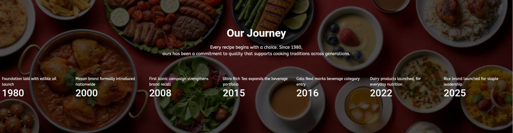

Mezan was established in the year 1951-1952 with the corporate name of “Paracha Textile Mills Limited”. The foundation stone was laid by the Excellency of Khawaja Nazimuddin, the Governor General of Pakistan. In 1983, the current management took over the Company and the Board of Directors carried the same vision forward, delivering quality edible oil in a fairly new developing market in Pakistan. The Ghee Unit Batch refinery was established and started manufacturing different brands of Ghee and Cooking Oil, which include Mezan Canola Oil, Mezan Cooking Oil, Mezan Sunflower Oil, Mezan Banaspati, Olivola, Dil Dil Banaspati and Cooking Oil, Paracha Banaspati and Cooking Oil, Awaz Banaspati and Cooking Oil and Mezan Perfect Fry etc. Over the last few years, Mezan has proven to be admired across Pakistan due to its wide variety of products, constant innovation, highly attractive packaging formats, suitable prices for every consumer segment and memorable advertising. The “Mezan” brand was nationally launched in 2008 through the most iconic media advertising campaign of the category titled:
“HAR CHEEZ MEZAN MEIN ACHI LAGTI HAI!”
